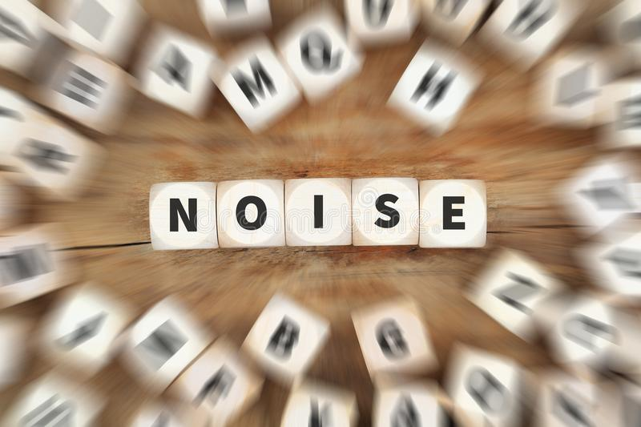

Situation on the Ground

.jpg)
Some groups are more vulnerable to noise. As children spend more time in bed than adults, they are more exposed to night noise. Chronically ill and elderly people are more sensitive to disturbance. Shift workers are at increased risk because their sleep structure is under stress. In addition, the less affluent who cannot afford to live in quiet residential areas or have adequately insulated homes, are likely to suffer disproportionately.
Nuisance at night can lead to an increase in medical visits and spending on sleeping pills, which affects families’ budgets and countries’ health expenditure. The gap between rich and poor is likely to increase if governments fail to address noise pollution.
Impairment of early childhood development and education caused by noise may have lifelong effects on academic achievement and health. Studies and statistics on the effects of chronic exposure to aircraft noise on children have found:
The WHO Environmental Noise Guidelines for the European Region provide guidance on protecting human health from harmful exposure to environmental noise. They set health-based recommendations on average environmental noise exposure of five relevant sources of environmental noise. These sources are: road traffic noise, railway noise, aircraft noise, wind turbine noise and leisure noise. The Environmental Noise Guidelines aim to support the legislation and policy-making process on local, national and international level. The WHO guideline values are public health-oriented recommendations, based on scientific evidence of the health effects and on an assessment of achievable noise levels.